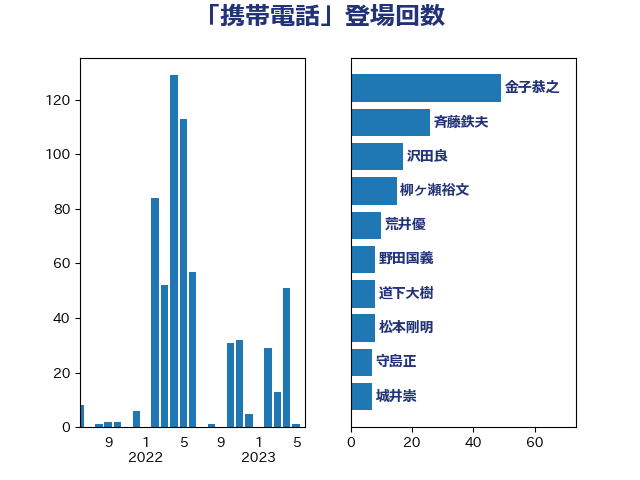

単語「携帯電話」

| 金子恭之 | 自由民主党 | 49 回 |
| 斉藤鉄夫 | 公明党 | 26 回 |
| 沢田良 | 日本維新の会 | 17 回 |
| 柳ヶ瀬裕文 | 日本維新の会 | 15 回 |
| 荒井優 | 立憲民主党 | 10 回 |
| 野田国義 | 立憲民主党 | 8 回 |
| 道下大樹 | 立憲民主党 | 8 回 |
| 松本剛明 | 自由民主党 | 8 回 |
| 守島正 | 日本維新の会 | 7 回 |
| 城井崇 | 立憲民主党 | 7 回 |
| 中西祐介 | 自由民主党 | 7 回 |
| 高橋千鶴子 | 日本共産党 | 6 回 |
| 金城泰邦 | 公明党 | 6 回 |
| 緒方林太郎 | 無所属 | 6 回 |
| 清水貴之 | 日本維新の会 | 6 回 |
| 紙智子 | 日本共産党 | 5 回 |
| 渡辺周 | 立憲民主党 | 5 回 |
| 小沢雅仁 | 立憲民主党 | 5 回 |
| 寺田稔 | 自由民主党 | 5 回 |
| 若松謙維 | 公明党 | 4 回 |
| 渡辺孝一 | 自由民主党 | 4 回 |
| 柘植芳文 | 自由民主党 | 4 回 |
| 平林晃 | 公明党 | 4 回 |
| 伴野豊 | 立憲民主党 | 4 回 |
| 関芳弘 | 自由民主党 | 3 回 |
| 鈴木義弘 | 国民民主党 | 3 回 |
| 鈴木宗男 | 日本維新の会 | 3 回 |
| 西村智奈美 | 立憲民主党 | 3 回 |
| 菅家一郎 | 自由民主党 | 3 回 |
| 福田昭夫 | 立憲民主党 | 3 回 |
| 福島みずほ | 社会民主党 | 3 回 |
| 石橋林太郎 | 自由民主党 | 3 回 |
| 牧原秀樹 | 自由民主党 | 3 回 |
| 森山浩行 | 立憲民主党 | 3 回 |
| 岸田文雄 | 自由民主党 | 3 回 |
| 山本香苗 | 公明党 | 3 回 |
| 小森卓郎 | 自由民主党 | 3 回 |
| 宮本岳志 | 日本共産党 | 3 回 |
| 伊藤渉 | 公明党 | 3 回 |
| 井林辰憲 | 自由民主党 | 3 回 |
| 中司宏 | 日本維新の会 | 3 回 |
| 鈴木敦 | 国民民主党 | 2 回 |
| 輿水恵一 | 公明党 | 2 回 |
| 西野太亮 | 自由民主党 | 2 回 |
| 藤川政人 | 自由民主党 | 2 回 |
| 若宮健嗣 | 自由民主党 | 2 回 |
| 芳賀道也 | 国民民主党 | 2 回 |
| 神田潤一 | 自由民主党 | 2 回 |
| 松本尚 | 自由民主党 | 2 回 |
| 杉本和巳 | 日本維新の会 | 2 回 |
| 斎藤アレックス | 国民民主党 | 2 回 |
| 市村浩一郎 | 日本維新の会 | 2 回 |
| 工藤彰三 | 自由民主党 | 2 回 |
| 堀井巌 | 自由民主党 | 2 回 |
| 吉田とも代 | 日本維新の会 | 2 回 |
| 古川俊治 | 自由民主党 | 2 回 |
| 佐々木紀 | 自由民主党 | 2 回 |
| 井坂信彦 | 立憲民主党 | 2 回 |
| 高野光二郎 | 自由民主党 | 1 回 |
| 高橋光男 | 公明党 | 1 回 |
| 高市早苗 | 自由民主党 | 1 回 |
| 青柳仁士 | 日本維新の会 | 1 回 |
| 長谷川英晴 | 自由民主党 | 1 回 |
| 鈴木庸介 | 立憲民主党 | 1 回 |
| 鈴木俊一 | 自由民主党 | 1 回 |
| 金村龍那 | 日本維新の会 | 1 回 |
| 野田佳彦 | 立憲民主党 | 1 回 |
| 足立康史 | 日本維新の会 | 1 回 |
| 赤羽一嘉 | 公明党 | 1 回 |
| 西田実仁 | 公明党 | 1 回 |
| 西岡秀子 | 国民民主党 | 1 回 |
| 藤井比早之 | 自由民主党 | 1 回 |
| 蓮舫 | 立憲民主党 | 1 回 |
| 落合貴之 | 立憲民主党 | 1 回 |
| 米山隆一 | 立憲民主党 | 1 回 |
| 神津たけし | 立憲民主党 | 1 回 |
| 石井章 | 日本維新の会 | 1 回 |
| 田村智子 | 日本共産党 | 1 回 |
| 玄葉光一郎 | 立憲民主党 | 1 回 |
| 浜田靖一 | 自由民主党 | 1 回 |
| 浅野哲 | 国民民主党 | 1 回 |
| 浅田均 | 日本維新の会 | 1 回 |
| 永岡桂子 | 自由民主党 | 1 回 |
| 武田良太 | 自由民主党 | 1 回 |
| 櫻井周 | 立憲民主党 | 1 回 |
| 森屋隆 | 立憲民主党 | 1 回 |
| 柴山昌彦 | 自由民主党 | 1 回 |
| 柳本顕 | 自由民主党 | 1 回 |
| 林芳正 | 自由民主党 | 1 回 |
| 松下新平 | 自由民主党 | 1 回 |
| 東徹 | 日本維新の会 | 1 回 |
| 杉尾秀哉 | 立憲民主党 | 1 回 |
| 本村伸子 | 日本共産党 | 1 回 |
| 末次精一 | 立憲民主党 | 1 回 |
| 末松信介 | 自由民主党 | 1 回 |
| 木村次郎 | 自由民主党 | 1 回 |
| 早稲田ゆき | 立憲民主党 | 1 回 |
| 早坂敦 | 日本維新の会 | 1 回 |
| 後藤祐一 | 立憲民主党 | 1 回 |
| 広瀬めぐみ | 自由民主党 | 1 回 |
| 平沼正二郎 | 自由民主党 | 1 回 |
| 川合孝典 | 国民民主党 | 1 回 |
| 小林鷹之 | 自由民主党 | 1 回 |
| 安江伸夫 | 公明党 | 1 回 |
| 大島敦 | 立憲民主党 | 1 回 |
| 大串博志 | 立憲民主党 | 1 回 |
| 塩田博昭 | 公明党 | 1 回 |
| 吉田宣弘 | 公明党 | 1 回 |
| 古賀之士 | 立憲民主党 | 1 回 |
| 古川禎久 | 自由民主党 | 1 回 |
| 加藤勝信 | 自由民主党 | 1 回 |
| 佐藤英道 | 公明党 | 1 回 |
| 伊藤岳 | 日本共産党 | 1 回 |
| 伊佐進一 | 公明党 | 1 回 |
| 井出庸生 | 自由民主党 | 1 回 |
| 五十嵐清 | 自由民主党 | 1 回 |
| 串田誠一 | 日本維新の会 | 1 回 |
| 中川郁子 | 自由民主党 | 1 回 |
| 中川貴元 | 自由民主党 | 1 回 |
| 中川宏昌 | 公明党 | 1 回 |
| 下野六太 | 公明党 | 1 回 |
| 上野通子 | 自由民主党 | 1 回 |
| 一谷勇一郎 | 日本維新の会 | 1 回 |
| おおつき紅葉 | 立憲民主党 | 1 回 |